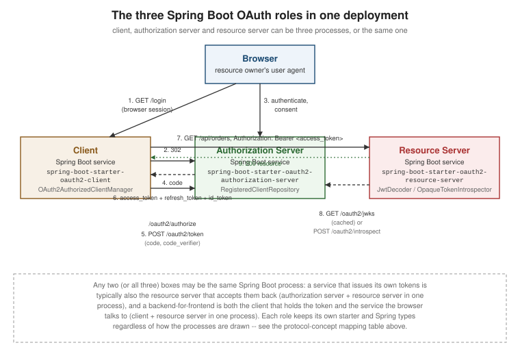

Spring Boot Integration: Overview
|
This content was generated with the assistance of AI and should be verified against the official documentation before being relied on in production. |
Every other page in this OAuth Reference section is framework-neutral: it describes what the specifications say, not how any particular framework implements them. This page and its two companions — Spring Boot Flow Recipes and Spring Boot Authentication Methods — are the Spring-specific tail of the section: they name the concrete Spring Boot 4.1.x / Spring Security 7.1.x type or starter that implements each protocol concept, using the lambda DSL throughout.
Two deep Spring pages already exist in the repository’s SpringBoot reference — Spring Security and Authorization Server & Social Login — and they are not repeated here. This page’s job is narrower: name the three roles and their starters, give the protocol-to-Spring-type dictionary a reader needs while working through the rest of this section, and say exactly which existing page already covers which piece, so nobody ends up maintaining (or trusting) a second, possibly diverging, copy of that material.
The three roles a Spring Boot service can play
Getting Started defines the four protocol roles — resource owner, client, authorization server, resource server. A Spring Boot process can play any combination of the last three at once; only "resource owner" is always a human (or another service acting as one), never the Spring process itself. Each of the three Spring-side roles has its own Boot starter, and adding more than one to the same project is normal — a service that issues its own tokens is very often also the resource server that accepts them back.
Client — spring-boot-starter-oauth2-client
Add this starter when your service needs to obtain and hold tokens on behalf of a user or itself, to call
someone else’s API, or to let a user sign in through someone else’s authorization server ("Sign in with
Google"). It brings in spring-security-oauth2-client and autoconfigures a ClientRegistrationRepository from
spring.security.oauth2.client.registration.* properties.
<dependency>
<groupId>org.springframework.boot</groupId>
<artifactId>spring-boot-starter-oauth2-client</artifactId>
</dependency>Use it for oauth2Login() (social/federated sign-in, covered on
Authorization Server & Social Login) and for
any of the machine-to-machine and delegated-token flows in
Spring Boot Flow Recipes.
Resource server — spring-boot-starter-oauth2-resource-server
Add this starter when your service accepts bearer tokens issued by someone else’s (or your own) authorization
server and must validate them before serving a request. It brings in spring-security-oauth2-resource-server
plus, for JWTs, spring-security-oauth2-jose.
<dependency>
<groupId>org.springframework.boot</groupId>
<artifactId>spring-boot-starter-oauth2-resource-server</artifactId>
</dependency>JWT validation and opaque-token introspection are both already documented end to end on Spring Security — see What is already documented elsewhere below.
Authorization server — spring-boot-starter-oauth2-authorization-server
Add this starter when your service issues its own access, refresh and ID tokens — it is Spring Authorization
Server, which moved into Spring Security 7.0 and is no longer a separate top-level project. It brings in
spring-security-oauth2-authorization-server.
<dependency>
<groupId>org.springframework.boot</groupId>
<artifactId>spring-boot-starter-oauth2-authorization-server</artifactId>
</dependency>Configuring the protocol endpoints, RegisteredClient, the database model and consent is documented in full on
Authorization Server & Social Login. A
service running its own authorization server is exactly the scope of
Spring Boot Authentication Methods.
| Role | Starter | Central Spring type |
|---|---|---|
Client |
|
|
Resource server |
|
|
Authorization server |
|
|
|
A service can be its own authorization server and its own resource server in the same process (two ordered
|
Protocol concept to Spring type mapping
Every protocol page in this section describes a concept in spec vocabulary. This table is the dictionary from that vocabulary to the Spring type that implements it, so a reader arriving from a protocol page can jump straight to the right class.
| Protocol concept | Spring type(s) |
|---|---|
Authorization request (building/customising the redirect to |
|
Client configuration (client ID/secret, endpoints, scopes for one registration) |
|
Token acquisition (obtaining, and transparently refreshing, a token for a grant) |
|
Stored grant (the access/refresh token pair held for one client + principal) |
|
JWT validation (resource server side) |
|
Token introspection (resource server side, opaque tokens) |
|
Scope (as it lands in the resource server’s |
|
ID token (OpenID Connect, as it lands in the client’s |
|
Issued-token customisation (authorization server side) |
|
Registered client (authorization server side) |
|
This table is deliberately terse — each row is expanded with a worked example either on Spring Boot Flow Recipes (client- and resource-server-side rows) or on Authorization Server & Social Login (authorization-server-side rows).
What is already documented elsewhere
Everything in this row-by-row table is covered in full on one of the two existing SpringBoot pages, with real configuration, database schemas and worked examples. Read it there; nothing here restates it.
| Topic | Where | What it covers |
|---|---|---|
Filter chain, method security, |
|
|
OAuth2 Resource Server — JWT |
|
|
OAuth2 Resource Server — opaque tokens |
|
|
Authorization-server configuration |
|
|
|
|
|
Social login ( |
Google, Microsoft Entra ID and Sign in with Apple provider config, |
|
Calling downstream/provider APIs as a client |
|
|
The rest of this OAuth Reference section’s Spring pages assume you have read those two pages. Where a flow or
authentication method already has a worked Spring example there, Spring Boot Flow Recipes and
Spring Boot Authentication Methods link to it instead
of writing a second, inevitably-diverging one. They only add the flows and authentication methods those two
pages do not cover: device code, token exchange, assertion grants, |
The three roles in one deployment

Three separate Spring Boot processes are shown for clarity; nothing stops the authorization-server and resource-server boxes from being the same process (the common case for a service that issues and then consumes its own tokens), or the client and resource-server boxes from being the same process (a BFF that both terminates the browser session and calls its own downstream API). The token flows are the same regardless of how many processes they cross:
-
The browser is redirected from the client to the authorization server’s
/oauth2/authorizeendpoint. -
The authorization server authenticates the resource owner and, on consent, redirects back with an authorization code.
-
The client exchanges the code at
/oauth2/tokenfor an access token (and, where issued, a refresh token and an ID token). -
The client calls the resource server with
Authorization: Bearer <access_token>. -
The resource server validates the token — either locally as a JWT against the authorization server’s
/oauth2/jwks, or remotely via/oauth2/introspectfor an opaque token.
Every one of those five steps is a xref: target elsewhere in this section:
Authorization Code and PKCE for steps 1-3,
Access and Refresh Tokens for what comes back in step 3, and
JWT and JOSE /
Opaque Tokens, Introspection and Revocation
for step 5.
See also: Building an Authorization Server from Scratch — a worked, end-to-end example of the authorization-server role described here.